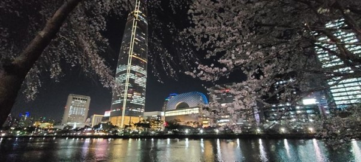
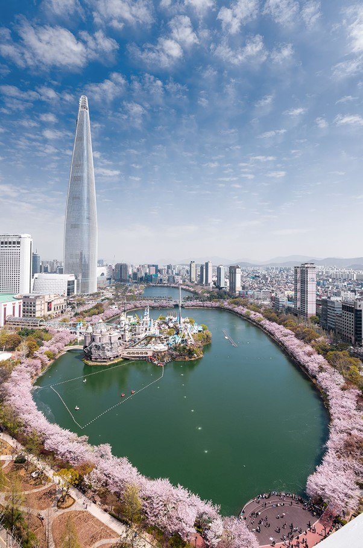
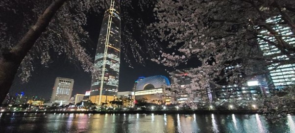
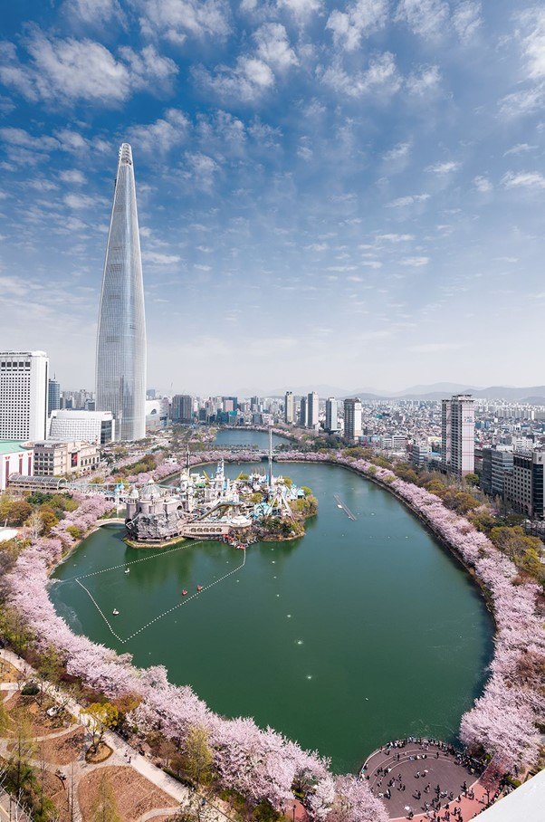

롯데월드
개요
롯데월드는 호텔 롯데 월드사업부에 속해 있는 업체들을 대부분 이르는 말로, 서울 동남 지역 송파구에 위치한 오락 및 놀이 시설이다. 세계 최대 규모의 실내 테마파크 롯데월드 어드벤처가 가장 유명하지만, 롯데월드몰, 롯데월드 아쿠아리움, 롯데월드타워가 있는 곳이기도 하다.
롯데월드 어드벤처 / 매직 아일랜드
롯데월드몰
롯데월드 아쿠아리움
롯데월드타워
소개
서울특별시 송파구 잠실동에 위치한 테마파크이다. 대지면적 기준으로 세계 2위 규모를 가진 실내 테마파크이자 연간 약 800만 명이 방문하는 국내 대표 테마파크 중 하나이다. 1989년 7월 12일에 실내구역인 어드벤처가 개원하였으며, 1990년 3월 24일 실외구역인 매직 아일랜드가 추가로 개원하며 현재에 이른다.
롯데월드 쇼핑몰 내부에 위치해 있으며 롯데월드 중에서 제일 인지도가 높다. 대부분 롯데월드 가자고 하면 십중팔구 이곳을 뜻한다. 롯데월드 어드벤처와 매직 아일랜드에는 50여 가지에 달하는 놀이기구가 있어서 취향에 따라 골라 타는 재미가 있다. 스릴을 즐기는 사람이라면 짜릿한 경험을 선사하는 여러 롤러코스터 중에 하나를 선택하면 된다.
평점
구글 맵 기준 평점 4.2/5.0
사진
소개
서울특별시 송파구에 위치한 롯데그룹의 대형 쇼핑몰이다. 2014년 10월 14일부터 영업을 시작하였다. 토지 면적은 87,182㎡. (26,400여 평)로 롯데월드타워와 연결돼 있고 복합 쇼핑몰과 편의 시설, 문화 공간 등이 들어서 있다.
롯데월드몰에서는 프리미엄 라이프스타일을 추구하기 위해 필요한 모든 것을 찾아볼 수 있다. 국내외 유명 브랜드 제품을 한 곳에서 둘러볼 수 있는 글로벌 패션 중심지이자, 에비뉴엘의 명품 매장에 둘러싸인 고급 쇼핑몰이기도 하다. 또한 최첨단 기술로 설계되어 비할 데 없는 음향을 자랑하는 아시아 최대의 영화관이자 공연장인 롯데시네마를 비롯하여 다양한 엔터테인먼트 시설까지 갖추고 있고, 한국의 대표적인 할인마트 체인인 롯데마트도 빼놓을 수 없는 쇼핑 명소다.
평점
구글 맵 기준 평점 4.3/5.0
사진
소개
롯데월드몰 엔터테인먼트동 지하1층 ~ 지하2층에 있는 아쿠아리움이다. 2014년 10월 16일에 개장하였고 총 5200톤의 수조에 650여종의 5만 5000여 마리의 생물이 전시되어 있다.
롯데월드 아쿠아리움은 13가지 테마존으로 구성되어 있으며, 각 테마존에는 전세계의 각기 다른 해양 생물이 전시되어 있다. 한국 최대 규모의 메인 수족관과 수중 터널에서 머리 위로 헤엄치는 해양 생물을 감상할 수도 있다. 롯데월드 아쿠아리움은 바다에 대한 일반 대중의 이해와 지식을 넓히는 것을 목적으로 오락성과 교육적 효과가 높은 전시를 선보이고 있다.
평점
구글 맵 기준 평점 4.2/5.0
사진
소개
서울특별시 송파구에 위치한 초고층 빌딩이다. 지상 123층, 높이 554.5m로 2022년 기준 대한민국 최고층 건물이자 세계에서 5번째로 높은 건물이고, OECD 중에서 가장 높은 건물이다. 본 건물은 롯데그룹의 한국 본사로서 사용되는 중이다. 전체 면적은 420,309.54㎡(127,143평)에 달한다.
2017년 개장하자마자 서울 최고의 랜드마크는 물론 한국의 상징이 되었다. 첨단 기술로 설계 및 시공된 롯데월드타워에는 금융기관, 피트니스센터, 헬스케어센터 등 도시에서 생활하는 현대인에게 필요한 모든 것이 갖춰져 있다. 롯데월드타워 117층 연결 통로를 통해 123층까지 올라가면 한국에서 가장 높은 전망대인 서울스카이로 갈 수 있어 유리 바닥 너머로 서울의 아름다운 전경을 감상할 수 있다.
건물 모양은 붓을 형상화한 디자인이라고 하고, 건물 외벽 도색 및 세부 디자인은 고려 청자에서 모티브를 가져왔다고 한다. 빌딩 외벽에 LED 조명들이 깔려 있어 화려하고 미세한 색 조정이 가능하다.
평점
구글 맵 기준 평점 4.4/5.0
사진
교통
롯데월드 내 모든 시설은 지하철 잠실역에서 도보로 5분 거리 내외에 있다. 잠실역은 서울 도심을 순환하는 지하철 2호선에 있다. 롯데월드 어드벤처에 가려면 잠실역 4번 출구로 나오면 되고 롯데월드몰과 롯데월드타워에 가려면 2번 출구를 이용하면 된다. 또한 지하로도 잠실역과 바로 연결되어 있어 지상으로 나오지 않고도 바로 접근할 수 있다는 장점이 있다.
 


